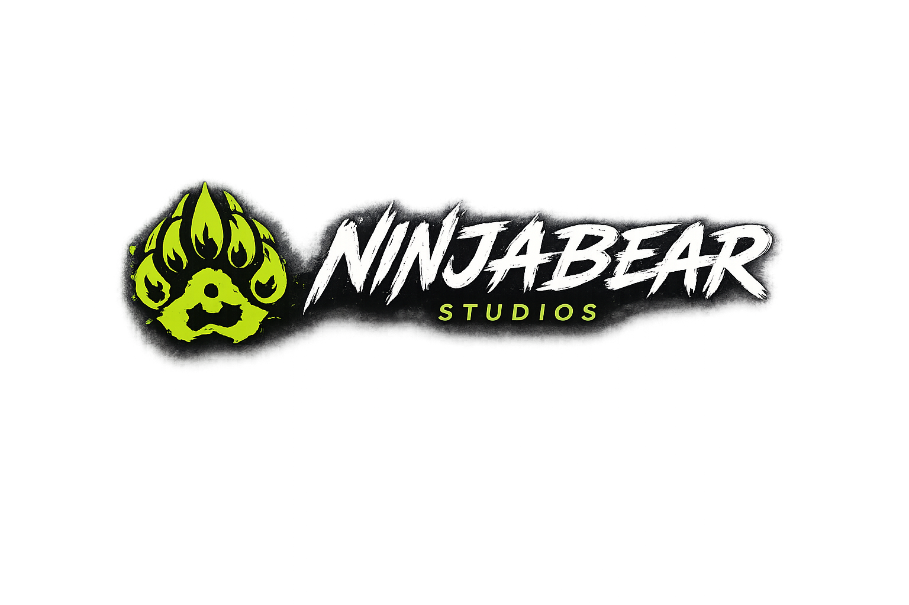

Who I Am
This page is intentionally structured as a strong starting point: headline, core promise, project status, and next action. Replace this block with live links, embedded media, or screenshots as the section matures.

A creator studio for code, music, games, stories, and the disciplined pursuit of hyperfixation.
Back to StudioThis page is intentionally structured as a strong starting point: headline, core promise, project status, and next action. Replace this block with live links, embedded media, or screenshots as the section matures.
Use this area for featured work, release notes, stream highlights, or deeper notes. The styling matches the main studio interface so each page feels connected.
Keep the first production version lean. Add content in public, iterate quickly, and let the site become the archive for the NinjaBear ecosystem.